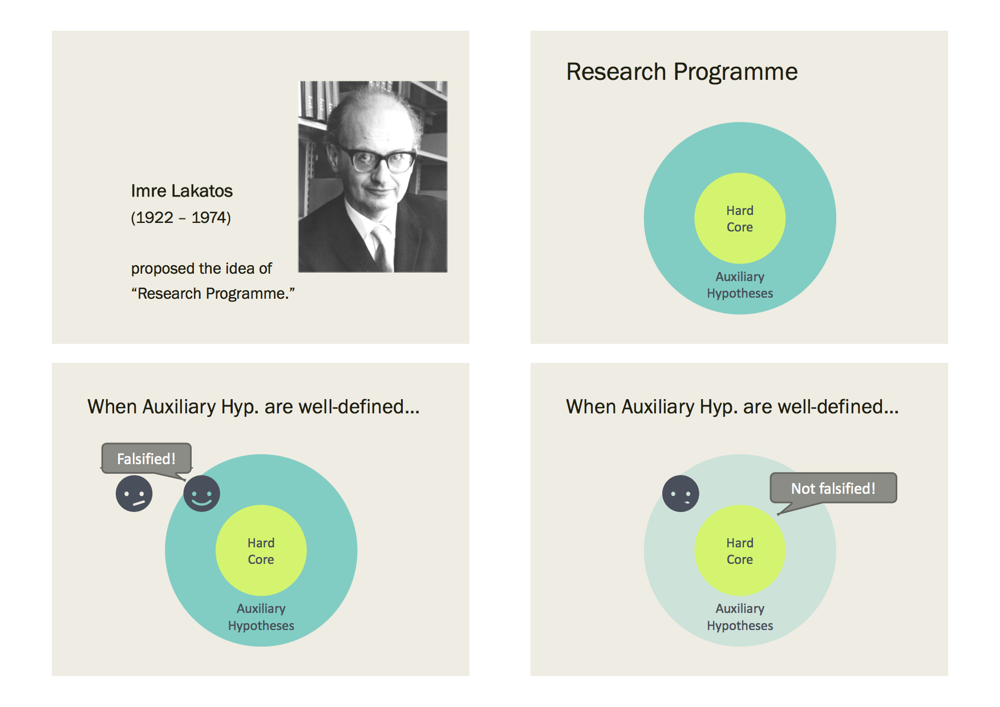

TODA RADIO #004 専修大学公開収録
- ハッシュタグ
#TodaRadioでお願いします（↑のボタンから行けます）。
※ 本ラジオでの発言は個人の見解であり、所属する組織の見解ではありません。
※ 科学的な正しさを重視して発言していますが、発言には誤りが含まれることもありえます。
※ ご意見、苦情などありましたら高橋までメール takahashi.kohske@gmail.com またはツイッター @kohske までご連絡ください。
※ ディスカッションルームもあります。
- 収録日: 2018/03/12
- 場所: 専修大学サテライトキャンパス
- 研究会の案内: 「心理学における再現可能性入門」
- メンバー
概要
- イントロ（澤さん・国里さん自己紹介）
- 臨床心理学者から見た再現可能性問題
- 学習心理学者から見た再現可能性問題
- 動物実験のおけるパラメータ統制の話
- 臨床診断カテゴリと機序研究
- 専修大学での動きなど
公開収録の様子
TODAラジオ収録ちう。 pic.twitter.com/ywsXdLuYAw
— 大久保 街亜 / Matia Okubo (@matiasauquebaux) 2018年3月12日
ラジオの時系列順にポインタ
自己紹介
- 研究会の案内「心理学における再現可能性入門」 https://kunisatolab.github.io/main/intro_reproducible_res.html
- 澤先生のウェブサイト: http://kujira.psy.senshu-u.ac.jp/~sawa/index.html
- 行動心理学
- 国里先生のウェブサイト: https://kunisatolab.github.io/main/index.html
- 臨床心理学
- 計算論的臨床心理学: https://www.slideshare.net/YoshihikoKunisato/ss-74207031
再現可能性問題に対する立ち位置
- 心理学評論の再現可能性特集号 http://team1mile.com/sjpr59-1/
- 編集委員の友永先生: https://langint.pri.kyoto-u.ac.jp/langint/staff/masaki_tomonaga-j.html
- 連合学習についての澤先生の動心論文: https://www.jstage.jst.go.jp/article/janip/advpub/0/advpub_62.1.4/_article/-char/ja/
- 精神医学: https://ja.wikipedia.org/wiki/%E7%B2%BE%E7%A5%9E%E5%8C%BB%E5%AD%A6
- 奥村泰之先生のウェブサイト: http://blue.zero.jp/yokumura/index.html
- 臨床疫学研究における報告の質向上のための統計学の研究会: http://blue.zero.jp/yokumura/workshop.html
- 日本臨床疫学研究会: http://www.clinicalepi.org/
- 異常心理学: https://ja.wikipedia.org/wiki/%E7%95%B0%E5%B8%B8%E5%BF%83%E7%90%86%E5%AD%A6
- CBT（認知行動療法）: http://cbt.ncnp.go.jp/guidance/about
効果量のインフレ
- 精神分析学: https://ja.wikipedia.org/wiki/%E7%B2%BE%E7%A5%9E%E5%88%86%E6%9E%90%E5%AD%A6
- パブリケーションバイアス（出版バイアス）
- 古川先生の講義（国里さんより「登録が必要ですが，この『ICR臨床研究入門』は，動画資料も多くて，臨床研究の方法を学ぶのにとても良いです」とのことです）: https://www.icrweb.jp/course/view.php?id=226
- 力動精神医学: https://ja.wikipedia.org/wiki/%E5%8A%9B%E5%8B%95%E7%B2%BE%E7%A5%9E%E5%8C%BB%E5%AD%A6
- 力動論: http://gakumon.info/archives/127/
- exploratoryといいたいんだけど言えてない（この後も何回か言えてない）
動物実験におけるパラメータ
- 動物実験のプロトコル
- 関連するNature記事 https://www.nature.com/news/a-mouse-s-house-may-ruin-experiments-1.19335
- 関連記事「マウスの飼育状態で、実験結果が台無しに？」 http://animals-peace.net/experiments/mouses_house_ruin_experiments.html
- ツァイトゲーバー（生物時計） https://staff.aist.go.jp/s-hanai/biologicalrhythm.html
- コア理論と周辺理論（その１） 
- コア理論と周辺理論（その２）
5-8ページ目
- 分子生物学
- 関連するツイート https://twitter.com/kohske/status/974130074617225216
のみが、追試に失敗しまくってるコア理論を救済する手段になり、その時にコア理論は、より洗練された物になると思います。澤さんが言ってたブロッキングの15の失敗は、こういうことになるのかなと思います。長々とすいません。
— kohske (@kohske) 2018年3月15日 - ブロッキング（阻止）: https://kagaku-jiten.com/learning-psychology/theory-of-classical-conditioning.html
- オープンサイエンス
- 実験環境のビデオ撮り
- SPSPの発表: https://spsp2018.zerista.com/event/member/438321
- 阪大人科: https://www.hus.osaka-u.ac.jp/
- 古典的条件づけ: https://kagaku-jiten.com/learning-psychology/
- レスコーラ＝ワグナーモデル: https://kagaku-jiten.com/learning-psychology/theory-of-classical-conditioning.html
- 仮説構成概念（「心理学における構成概念と説明」PDF）: http://www.obihiro.ac.jp/~psychology/kiyou95.pdf
- 岡田先生のウェブサイト: http://www3.psy.senshu-u.ac.jp/~ken/
- 固定効果とランダム効果（「固定効果と変量効果」）: http://www.jil.go.jp/institute/zassi/backnumber/2015/04/pdf/006-009.pdf
- 緑本を読んで勉強を: https://www.amazon.co.jp/dp/400006973X
- メタスタディ: http://www.pnas.org/content/early/2018/03/08/1708285114
- パンゲア: https://jakewestfall.shinyapps.io/pangea/
- 大久保先生のウェブサイト: http://www3.psy.senshu-u.ac.jp/~mokubo/
- RNG: https://ja.wikipedia.org/wiki/RNG
- MT法: https://ja.wikipedia.org/wiki/%E3%83%A1%E3%83%AB%E3%82%BB%E3%83%B3%E3%83%8C%E3%83%BB%E3%83%84%E3%82%A4%E3%82%B9%E3%82%BF
- 50歳
- ブートストラップ法: https://ja.wikipedia.org/wiki/%E3%83%96%E3%83%BC%E3%83%88%E3%82%B9%E3%83%88%E3%83%A9%E3%83%83%E3%83%97%E6%B3%95
- 公益社団法人日本心理学会 倫理規程: https://psych.or.jp/publication/rinri_kitei/
- クラウドソーシングについて「大学生はオンライン調査に“まともに”答えているか？」: http://www.socialpsychology.jp/ronbun_news/32_02_0932.html
- 「追試やるべき度」方程式

診断による現象のカテゴリ化と機序研究の実践
- eating disorder: https://ja.wikipedia.org/wiki/%E6%91%82%E9%A3%9F%E9%9A%9C%E5%AE%B3
- eating disorder (専門家向け): http://www3.grips.ac.jp/~eatfamily/expert1.html
- 神経性無食欲症: https://ja.wikipedia.org/wiki/%E7%A5%9E%E7%B5%8C%E6%80%A7%E5%A4%A7%E9%A3%9F%E7%97%87
- 神経性大食症: https://ja.wikipedia.org/wiki/%E7%A5%9E%E7%B5%8C%E6%80%A7%E5%A4%A7%E9%A3%9F%E7%97%87
- ICD10: http://www.dis.h.u-tokyo.ac.jp/byomei/icd10/F00-F99.html
- DSM-5: https://h-navi.jp/column/article/35026307
- 臨床診断と機序
- Research Domain Criteria, RDoC (研究領域基準): https://www.nimh.nih.gov/research-priorities/rdoc/index.shtml https://ja.wikipedia.org/wiki/%E7%A0%94%E7%A9%B6%E9%A0%98%E5%9F%9F%E5%9F%BA%E6%BA%96
- 自由エネルギー原理（Free Energy Principle）: https://en.wikipedia.org/wiki/Free_energy_principle （FEPのPはPotentialではなくPrincipleです）。
- Karl Friston (SPMを開発してるヒトでもあります）: https://en.wikipedia.org/wiki/Karl_J._Friston
専修大学での動きについて
- 専修大学人間科学部心理学科・大学院心理学専攻: http://www.psy.senshu-u.ac.jp/
- Rマークダウン入門: https://kazutan.github.io/kazutanR/Rmd_intro.html
- 樋口先生: https://researchmap.jp/HIGUCHI_MA/
- 山田先生: https://sites.google.com/site/jyamadayuk/
- 乙事主: https://note.mu/momentumyy/n/n51cfb139df0c?magazine_key=m77f2becf2d56
- OSF https://osf.io/
- AsPredicted https://aspredicted.org/
- プレレジ精神的にいいよという話 https://rolfzwaan.blogspot.jp/2017/12/my-cattle.html “After a while preregistration becomes second nature and it becomes odd not to do it.”
- 公開収録後のLTで、北條大樹さん（専修大学大学院生）がOSFとPsyArxivの使用方法についての発表してくれました。スライドです: https://www.slideshare.net/daikihojo/osfpsyarxiv
感想など
- 初の公開収録ということで、勝手がわからない部分もありましたが、なんとか公開できるようなセッションができたと思います。この場を提供していただいた国里先生、ゲスト出演していただいた澤先生、国里先生、声を残していただいた大久保先生、岡田先生、樋口先生、そして参加していただいた皆様、ありがとうございました。自分自身、（心理学者ではないので）学習心理学や臨床心理学の知識が薄く、うまくハンドリングできていたか怪しい部分もありましたが、逆に大変勉強になりました。反省点として、パーソナリティが喋りすぎ、そして時間が短くて慌ただしすぎ、ということがあります。長すぎても微妙だし、難しいところです。また機会があったらどこかで公開収録を開催したいと思います。（高橋）